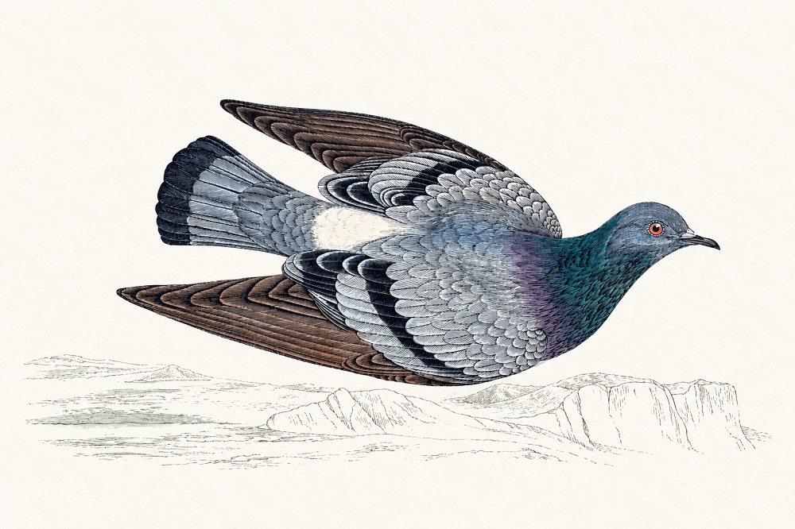

Home > Chronicles of a biblio-naturalist > Biomimesis in Action (09)
Biomimesis in Action (09)
No Bird Sees the Whole Sky
Flocks, conflicting bearings, and shared routes
When Two Birds Disagree
Release two homing pigeons from a familiar place and they may take different routes to the same loft. Each has learned a landscape of landmarks and habitual turns. Flying alone, each can repeat its preferred path. But what happens if they are released together?
For an observer on the ground, the answer may look simple: two birds fly home. A GPS receiver attached to each bird reveals something else. Their movements are a continuous negotiation between individual bearings and the impulse to remain together. Neither bird has access to its companion's experience. Each can only respond to the movements it observes.
There is a remarkable practical question hidden in this flight. How should a group proceed when its members hold different, partly reliable information about where to go?
A similar difficulty troubles collections spread across libraries, archives, and private hands. One institution holds a document, another has an old inventory, and somebody outside either institution remembers what happened during a transfer. The evidence points toward a common history, but its pieces rarely arrive with instructions for assembling them. A search must advance before the whole picture is available.
A Choice Recorded by GPS
Dora Biro and colleagues (2006) studied pigeons whose habitual homeward routes had been established through earlier flights. They then released pairs with different route preferences and recorded their movements using GPS. When their preferred directions differed only slightly, the birds tended to take an intermediate course. As disagreement increased, pairs sometimes separated; in other cases, one bird followed the other's route.
These outcomes arose during flight. The birds did not select a leader in advance or compare complete maps. Their interactions produced a common path when their differences were manageable, while greater conflict could change the very form of coordination.
Later experiments revealed another complication. Tracking flocks of up to ten pigeons, Nagy and colleagues (2010) found consistent leader-follower relationships in the tiny delays separating directional changes. Some birds repeatedly turned first. Others followed. The flock could move as a coherent unit while influence remained uneven.
And the leading bird was not necessarily the best navigator. Pettit and colleagues (2015) found that leadership was associated with the birds' individual flight speeds, rather than the efficiency of their previous solitary routes. After flying in flocks, leaders had also learned straighter routes than followers. The position that gave a bird influence could subsequently improve its familiarity with the landscape.
The experiments concern particular pigeons in particular conditions; they cannot explain every migrating flock. Still, they expose a useful tension. Shared movement allows a group to combine information, but cohesion can also give some individuals disproportionate influence. A flock may agree on a direction without having identified the bird whose knowledge best supports it.
An Archive with Several Bearings
Imagine trying to locate the missing notebooks of a naturalist whose specimens survive in a museum. The museum's accession register suggests that the notebooks accompanied the specimens. A university catalogue names the naturalist's papers in a separate deposit. A former assistant recalls that the original notebooks remained with the family. None of these leads can be dismissed; none is sufficient by itself.
The usual response is to appoint a coordinating institution and send enquiries outward. Information returns through correspondence, often becoming detached from the evidence that produced it. The institution holding the specimens may effectively determine which lead receives attention simply because the investigation began there.
The pigeons suggest an alternative worth testing. A collaborative search could make the relationship between the leads govern the work. Each custodian would register its claim with the evidence behind it, allowing the investigators to see where accounts converge and where they genuinely conflict. Where independent records support the same transfer, they could pursue one enquiry together. Where a letter contradicts the apparent transfer, the search could divide temporarily: one participant investigates the university deposit while another follows the family correspondence. The branches would remain linked so that a discovery on either side could change the other's direction.
Crucially, responsibility for a branch would follow access to the relevant evidence. The museum might coordinate the accession history, while the former assistant or a family custodian could guide the search through personal papers. Institutional prominence would cease to be the automatic source of navigational authority.
This does not require an elaborate new platform. A shared investigative record could preserve the origin of each lead, its supporting documents, the objections it encounters, and the decision to pursue, combine, or suspend a line of enquiry. The design difference lies in treating serious disagreement as a reason to change the organization of the search, rather than forcing every contribution into the first institution's working hypothesis.
There is an obvious risk. If every discrepancy creates another investigation, a small project will exhaust itself in branches. The point at which a difference warrants separation would therefore need explicit criteria, based on evidentiary significance and available resources. Unlike the birds' competing bearings, documentary claims cannot be averaged into a geographically intermediate answer.
The Problem of Who Leads
The leadership experiments introduce a second test for such a system. Does the participant directing an enquiry possess the most relevant knowledge, or merely the strongest institutional position? And does control over the investigation give that participant new opportunities to accumulate expertise while others become permanent suppliers of answers?
A museum can have excellent conservation facilities and incomplete provenance records. A community custodian may know where a recording originated yet have no authority to correct its description. If all evidence must pass through the museum before it can change the catalogue, the resulting route may reflect its organizational advantage as much as the quality of its information.
A shared investigative record would make these asymmetries visible. Decisions could identify the evidence that justified giving one participant responsibility for the next step and document when that responsibility should change. This would not eliminate unequal resources or power. It would give collaborators something concrete to examine when an enquiry keeps following the same institutional path despite contrary evidence.
Where the Sky Ends
The biological comparison has strict limits. Homing pigeons in these experiments share a destination. Archivists, researchers, and communities may disagree about whether a collection should be located, transferred, opened, or described in a particular way. Those disputes involve rights and obligations that no navigation experiment can settle. A person with authority over culturally restricted materials is not simply another bird offering a competing bearing.
Nor has the proposed documentary method been experimentally validated. It would need comparison with ordinary referral practices, examining accuracy, labor, unresolved contradictions, and the fate of evidence supplied by less powerful participants. Its attraction lies in a testable possibility: coordination could change as the evidentiary landscape changes.
From the ground, the flock appears to know its way. From the GPS traces, we see separate histories continually affecting a shared route. A dispersed archive poses the reverse problem: separate histories are already there, but the route connecting them must still be made. The useful lesson of collective navigation lies in knowing when to travel together, when to follow a better-informed guide, and when a disagreement deserves another path.
Bibliography
- Biro, Dora, David J. T. Sumpter, Jessica Meade, and Tim Guilford. 2006. "From Compromise to Leadership in Pigeon Homigng." Current Biology 16 (21): 2123–2128.
- Nagy, Máté, Zsuzsa Ákos, Dora Biro, and Tamás Vicsek. 2010. "Hierarchical Group Dynamics in Pigeon Flocks." Nature 464: 890–893.
- Pettit, Benjamin, Zsuzsa Ákos, Tamás Vicsek, and Dora Biro. 2015. "Speed Determines Leadership and Leadership Determines Learning during Pigeon Flocking." Current Biology 25 (23): 3132–3137.